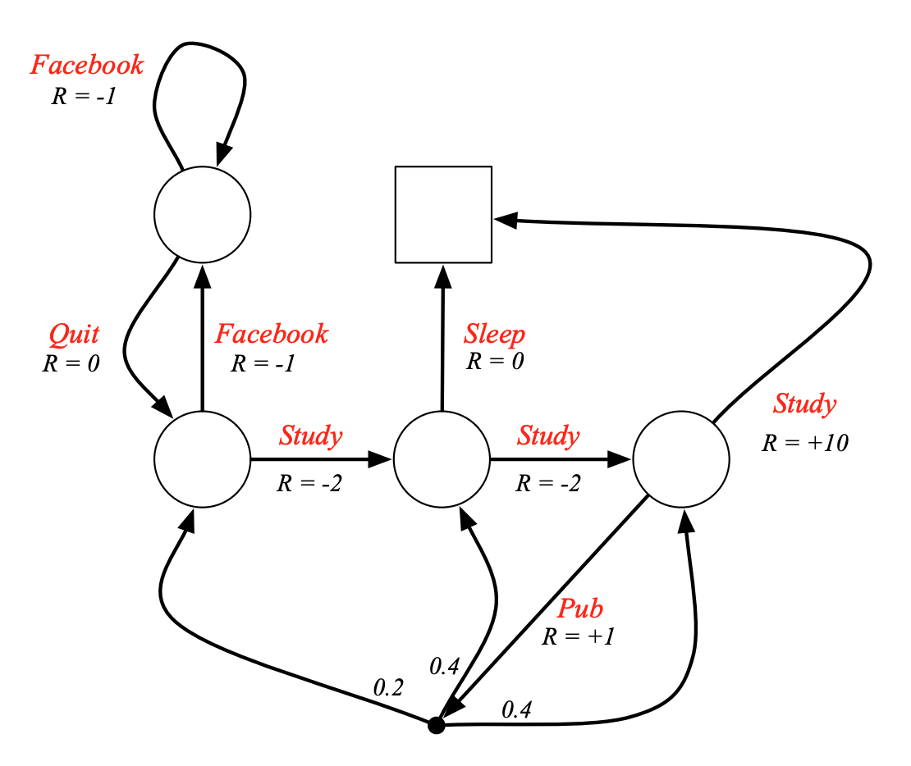

[David Silver强化学习]2·Markov Decision Processes
\[ \newcommand{\calS}{\mathcal S} \newcommand{\calP}{\mathcal P} \newcommand{\calR}{\mathcal R} \newcommand{\calA}{\mathcal A} \newcommand{\bbP}{\mathbb P} \newcommand{\E}{\mathbb E} \]
1 Markov Processes
1.1 Markov Property
一言以蔽之："The future is independent of the past given the present."
定义：一个状态 \(S_t\) 是 Markov 当且仅当 \[ \mathbb P(S_{t+1}\mid S_t)=\mathbb P(S_{t+1}\mid S_1,\ldots,S_t) \]
1.2 State Transition Matrix
对于 Markov state \(s\) 和它的后继状态 \(s'\)，定义： \[ \calP_{ss'}=\bbP(S_{t+1}=s'\mid S_t=s) \] 称矩阵 \(\calP\) 为状态转移矩阵。
1.3 Markov Process (Markov Chain)
定义：Markov Process 是一个元组 \(\langle \calS,\calP\rangle\)，其中：
- \(\calS\) 是一个有限的状态集合
- \(\calP\) 是状态转移矩阵
例子：Student Markov Chain
我们可以从这个 Markov Process 中采样，得到一些 episodes，例如：
- C1, C2, C3, Pass, Sleep
- C1, FB, FB, C1, C2, Sleep
- C1, C2, C3, Pub, C2, C3, Pass, Sleep
- C1, FB, FB, C1, C2, C3, Pub, C1, FB, FB, FB, C1, C2, C3, Pub, C2, Sleep
- ……
2 Markov Reward Processes
在 Markov Process 中加入 reward，就得到了 Markov Reward Process.
2.1 Markov Reward Process
回顾：奖励 reward \(R_t\) 是一个随机变量，表示 \(t\) 时刻的奖励。为什么说它是一个随机变量呢，因为对于从同一个 Markov process 中采样出的不同 episode，\(t\) 时刻的奖励是不同的——对于某特定采样出的 episode，其 \(t\) 时刻的奖励是随机变量 \(R_t\) 的某个特定取值。
定义：Markov Reward Process 是一个元组 \(\langle\calS, \calP, \calR, \gamma\rangle\)，其中：
- \(\calS\) 是一个有限的状态集合
- \(\calP\) 是状态转移矩阵
- \(\calR\) 是 reward function，\(\calR_s=\E[R_{t+1}\mid S_t=s]\)
- \(\gamma\in[0,1]\) 是衰减系数（discount factor）
例子：Student MRP
2.2 Return
定义 return \(G_t\) 是从时间戳 \(t\) 开始的总 reward： \[ G_t=R_{t+1}+\gamma R_{t+2}+\cdots=\sum_{k=0}^\infty\gamma^kR_{t+1+k} \] 由于 \(R_t\) 是随机变量，\(G_t\) 自然也是随机变量，其具体取值随采样出的 episode 的不同而不同。
为什么需要衰减系数？
- 数学上处理较为方便
- 避免在 Markov process 的环上出现无穷大的 return
- 我们的建模往往不太精准，我们对未来的把握不是很确定
- 对动物/人类的行为研究表明，我们更喜欢短期（立即的）奖励
- 如果你真的觉得衰减系数不好，那设置 \(\gamma=1\) 即可
2.3 Value Function
Return \(G_t\) 是一个随机变量，对于不同的采样结果具有不同的值，为了衡量平均的未来总 reward，定义价值函数 \(v(s)\) 为 \(G_t\) 的期望： \[ v(s)=\E[G_t\mid S_t=s] \] 仍以 Student MRP 为例：
【个人认为这一页 slide 上的 \(v_1\) 应该写作 \(g_1\)（随机变量 \(G_1\) 的各种可能取值），\(v_1\) 应该是这些 \(g_1\) 的平均，即 \(G_1\) 的期望】
对上述定义的小结：
- Reward \(R_t\) 是时间 \(t\) 的函数，是一个随机变量，表示 \(t\) 时刻获得的奖励。
- Reward function \(\calR_s\) 是状态 \(s\) 的函数，表示在状态 \(s\) 处下一步获得奖励的条件期望：\(\calR_s=\E[R_{t+1}\mid S_t=s]\)
- Return \(G_t\) 是时间 \(t\) 的函数，是一个随机变量，表示从 \(t\) 时刻开始未来的（加权）总奖励。
- Value function \(v(s)\) 是状态 \(s\) 的函数，表示在状态 \(s\) 处未来的（加权）总奖励的条件期望：\(v(s)=\E[G_t\mid S_t=s]\)
以时间戳 \(t\) 为下标的是随机变量，以状态 \(s\) 为下标的是对应随机变量的条件期望。
2.4 Bellman Equation
根据 \(v(s)\) 的定义式，有： \[ \begin{align} v(s)&=\E[G_t\mid S_t=s]\\ &=\E[R_{t+1}+\gamma R_{t+2}+\gamma^2R_{t+3}+\cdots\mid S_t=s]\\ &=\E[R_{t+1}+\gamma G_{t+1}\mid S_t=s]\\ \end{align} \] 这意味着 \(v(s)\) 由立即 reward \(R_{t+1}\) 和衰减后的未来 reward \(G_{t+1}\) 构成，我们继续推导： \[ \begin{align} v(s)&=\E[R_{t+1}+\gamma G_{t+1}\mid S_t=s]\\ &=\E[R_{t+1}\mid S_t=s]+\gamma\E[G_{t+1}\mid S_{t}=s]\\ &=\E[R_{t+1}\mid S_t=s]+\gamma\sum_{s'\in \mathcal S}\bbP(S_{t+1}=s'\mid S_t=s)\E[G_{t+1}\mid S_{t+1}=s']\\ &=\calR_s+\gamma\sum_{s'\in\mathcal S}\calP_{ss'}v(s') \end{align} \] 倒数第二行利用了全期望公式，通过全概率公式容易推得。上式就是 Bellman 方程，我们可以将其写作矩阵形式： \[ v=\calR+\gamma\calP v \] 也即 \[ \begin{bmatrix}v_1\\\vdots\\v_n\end{bmatrix}=\begin{bmatrix}\calR_1\\\vdots\\\calR_n\end{bmatrix}+\gamma\begin{bmatrix}\calP_{11}&\cdots&\calP_{1n}\\\vdots&\ddots&\vdots\\\calP_{n1}&\cdots&\calP_{nn}\end{bmatrix}\begin{bmatrix}v_1\\\vdots\\v_n\end{bmatrix} \] 可以看出，Bellman 方程是一个线性方程，可以直接求解： \[ v=(I-\gamma\calP)^{-1}\calR \] 然而，求解的复杂度是 \(O(n^3)\)，其中 \(n\) 是状态数量，因此只适用于小型 MRP。在后续课程中我们会学到一些求解大型 MRP 的迭代算法，包括：
- Dynamic programming
- Monte-Carlo evaluation
- Temporal-Difference learning
3 Markov Decision Process
在 Markov Reward Process 中加入 action，就得到了 Markov Decision Process.
3.1 Markov Decision Process
定义：Markov Decision Process 是一个元组 \(\langle\calS, \calA, \calP, \calR, \gamma\rangle\)，其中：
- \(\calS\) 是一个有限的状态集合
- \(\calA\) 是一个有限的动作集合
- \(\calP\) 是状态转移矩阵，\(\calP^a_{ss'}=\bbP(S_{t+1}=s'\mid S_t=s)\)
- \(\calR\) 是 reward function，\(\calR_s^a=\E[R_{t+1}\mid S_t=s,A_t=a]\)
- \(\gamma\in[0,1]\) 是衰减系数（discount factor）
注意 \(\calP,\calR\) 的定义都加上了动作 \(a\) 作为条件。
依旧用我们熟悉的例子，Student MDP 如下：

3.2 Policy
回顾策略 policy 的定义： \[ \pi(a\mid s)=\bbP(A_t=a\mid S_t=s) \] 一个策略定义了 agent 的行为，它仅依赖于当前状态而与历史无关。虽然上述定义式中写了下标 \(t\)，但是仅是为了书写方便，仔细想想不难知道，策略是静态的，和时间无关。
MDP 与 MP 和 MRP 的联系：给出一个 MDP \(\mathcal M=\langle\calS,\calA,\calP,\calR,\gamma\rangle\) 和一个策略 \(\pi\)，则：
- \(\langle\calS,\calP^\pi\rangle\) 是一个 Markov Process
- \(\langle \calS,\calP^\pi,\calR^\pi,\gamma\rangle\) 是一个 Markov Reward Process
其中 \[ \begin{align} &\calP^\pi_{ss'}=\sum_{a\in\calA}\pi(a\mid s)\calP^a_{ss'}\\ &\calR^\pi_s=\sum_{a\in\calA}\pi(a\mid s)\calR^a_s \end{align} \]
这两个式子本质上是条件概率（以 \(S_t=s\) 为条件）下的全概率公式——在状态 \(s\) 下，依照策略 \(\pi\)，有 \(\pi(a\mid s)\) 的概率做出动作 \(a\)，做出动作 \(a\) 后有 \(\calP^a_{ss'}\) 的概率转移到状态 \(s'\)，能获得期望 reward 为 \(\calR_s^a\).
3.3 Value Function
仿照 MRP 中 value function 的定义，加入策略 \(\pi\) 的因素，定义 state-value function \(v_\pi(s)\)： \[ v_\pi(s)=\E_\pi[G_{t}\mid S_t=s] \] 换句话说，当我们在对 \(G_t\) 采样时，需要依照策略 \(\pi\) 来采样。
假若在策略 \(\pi\) 下，我们第一步做出了动作 \(a\)，那么在此条件下，定义 action-value function \(q_\pi(s,a)\)： \[ q_\pi(s,a)=\E_\pi[G_t\mid S_t=s,A_t=a] \] 根据条件概率定义和全概率公式，容易知道： \[ \begin{align} &\color{purple}{v_\pi(s)=\sum_{a\in\calA}\pi(a\mid s)q_\pi(s,a)}\\ &q_\pi(s,a)=\pi(a\mid s)v_\pi(s) \end{align} \]
3.4 Bellman Expectation Equation
仿照 MRP 中关于 Bellman Equation 的推导，在 MDP 中进行类似推导： \[ \begin{align} v_\pi(s)&=\E_\pi[G_t\mid S_t=s]\\ &=\E_\pi[R_{t+1}+\gamma G_{t+1}\mid S_t=s]\\ &=\E_\pi[R_{t+1}\mid S_t=s]+\gamma\E_\pi[G_{t+1}\mid S_t=s]\\ &=\calR_s^\pi+\gamma\sum_{s'\in\mathcal S}\calP^\pi_{ss'}v_\pi(s')\\ &=\color{purple}{\sum_{a\in\calA}\pi(a\mid s)\left[\calR_s^a+\gamma\sum_{s'\in\mathcal S}\calP^a_{ss'}v_\pi(s')\right]} \end{align} \] 对 \(q_\pi(s,a)\) 也可以进行类似的推导： \[ \begin{align} q_\pi(s,a)&=\E_\pi[G_t\mid S_t=s,A_t=a]\\ &=\E_\pi[R_{t+1}+\gamma G_{t+1}\mid S_t=s,A_t=a]\\ &=\E_\pi[R_{t+1}\mid S_t=s,A_t=a]+\gamma\E_\pi[G_{t+1}\mid S_t=s,A_t=a]\\ &=\calR_s^a+\gamma\sum_{s'\in\calS}\E_\pi[G_{t+1}\mid S_{t+1}=s']\bbP(S_t=s+1\mid S_t=s,A_t=a))\\ &=\color{purple}{\calR_s^a+\gamma\sum_{s'\in\calS}\calP^a_{ss'}}v_\pi(s')\\ &=\color{purple}{\calR_s^a+\gamma\sum_{s'\in\calS}\calP^a_{ss'}}\sum_{a'\in\calA}\pi(a'\mid s')q_\pi(s',a')\\ \end{align} \] 紫色的四个式子分别建立起了 \(v_\pi(s)\) 与 \(v_\pi(s')\)、\(v_\pi(s)\) 与 \(q_\pi(s,a)\)、\(q_\pi(s,a)\) 与 \(q_\pi(s',a')\)、\(q_\pi(s,a)\) 与 \(v_\pi(s')\) 的关系，分别对应下面的四张图：
3.5 Optimal Value Function
我们做强化学习的最终目的是找到最佳的策略，因此定义最佳 state-value function 和最佳 action-value function 为：
\[ \begin{align} &v_\ast(s)=\max_\pi v_\pi(s)\\ &q_\ast(s,a)=\max_\pi q_\pi(s,a) \end{align} \] 定理：对于任何 MDP，存在最优策略 \(\pi_\ast\)（不一定唯一），并且 \(v_{\pi_\ast}(s)=v_\ast(s)\)，\(q_{\pi_\ast}(s,a)=q_\ast(s,a)\).
反之，沿着最大化 \(q(s,a)\) 的方向做决策，我们就能得到最优策略，即： \[ \pi_\ast(a\mid s)=\begin{cases}1&\text{if }a=\arg\max\limits_{a\in\calA} q_\ast(s,a)\\0&\text{otherwise}\end{cases} \] 这意味着：对任何 MDP，我们的最优策略都是确定性的（而不是概率性的）；只要我们求得 \(q_\ast(s,a)\)，那么就能立刻知道最优策略是什么。
3.6 Bellman Optimality Equation
最优策略也是策略的一种，所以四个 Bellman 方程自然在最优情况下也成立，略作化简可得： \[ \begin{align} &v_\ast(s)=\max_aq_\ast(s,a)\\ &q_\ast(s,a)=\calR^a_s+\gamma\sum_{s'\in\calS}\calP^a_{ss'}v_\ast(s')\\ &v_\ast(s)=\max_a\calR^a_s+\gamma\sum_{s'\in\calS}\calP^a_{ss'}v_\ast(s')\\ &q_\ast(s,a)=\calR_s^a+\gamma\sum_{s'\in\calS}\calP^a_{ss'}\max_{a'}q_\ast(s',a') \end{align} \] 与 Bellman Equation 和 Bellman Expectation Equation 不同，由于 \(\max\) 操作的存在，Bellman Optimality Equation 是非线性的，一般没有封闭解，但存在许多迭代解法，例如：
- Value Iteration
- Policy Iteration
- Q-learning
- Sarsa
4 Extensions to MDPs（了解）
我们之前考虑的 MDP 都是有限的、离散的、fully observable 的，如果没有这些限制，我们可以对 MDP 进行拓展。
4.1 Infinite MDPs
无限也分好几种：
- 可数无限的状态/动作空间：这种拓展是比较直接的
- 连续的状态/动作空间：Closed form for linear quadratic model
- 时间上连续：需要偏微分方程，Hamilton-Jacobi-Bellman equation，是 Bellman equation 在 \(t\to0\) 的极限情形
4.2 Partially Observable MDPs
POMDP 是一个具有隐状态的 MDP，是具有 actions 的隐马尔可夫模型。
定义：POMDP 是一个元组 \(\langle\calS,\calA,\mathcal O,\calP,\calR,\mathcal Z,\gamma\rangle\)，其中 \(\calS,\calA,\calP,\calR,\gamma\) 的定义不变，新增加了：
- \(\mathcal O\)：observations 的有限集合
- \(\mathcal Z\)：observation function，\(\mathcal Z_{s'o}^a=\bbP(O_{t+1}=o\mid S_{t+1}=s',A_t=a)\)
回顾：历史 history 是动作、观察和奖励的序列： \[ H_t=A_0,O_1,R_1,\ldots,A_{t-1},O_t,R_t \] 定义 belief state \(b(n)\) 是在给定历史的条件下，状态的概率分布： \[ b(h)=(\bbP(S_t=s^1\mid H_t=h),\ldots,\bbP(S_t=s^n\mid H_t=h)) \] 类似于 MDP 中我们画的两种树，POMDP 也可以规约成两种树：
4.3 Ergodic Markov Process
Ergodic Markov Process 指：
- Recurrent：每一个状态会被无限次访问
- Aperiodic：每一个状态被访问的时间不具有周期性
定理：一个 Ergodic Markov Process 具有极限的稳态分布 \(d^\pi(s)\) 满足： \[ d^\pi(s)=\sum_{s'\in\calS}d^\pi(s')\calP_{ss'} \] 对于任意策略 \(\pi\)，一个 ergodic MDP 有一个与起始状态无关的每时刻平均奖励 \(\rho^\pi\)： \[ \rho^\pi=\lim_{T\to\infty}\frac{1}{T}\E\left[\sum_{t=1}^TR_t\right] \] 利用 \(\rho^\pi\) 的定义，我们可以给出 undiscounted, ergodic MDP 的描述。设 \(\tilde v_\pi(s)\) 表示由于从状态 \(s\) 起始而带来的额外奖励，则 \[ \tilde v_\pi(s)=\E_\pi\left[\sum_{k=1}^\infty(R_{t+k}-\rho^\pi)\mid S_t=s\right] \] 我们可以相应地推导 average reward Bellman equation.